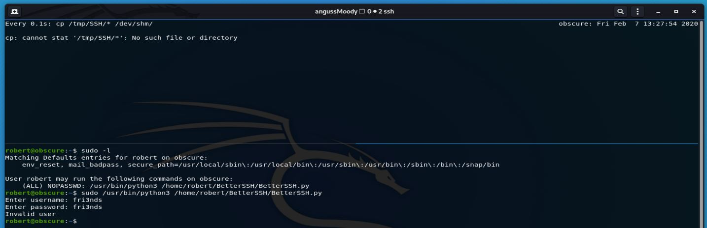

HTB Máquina Obscurity
angussMoody
- Sistema: linux
- Puntuación: 3.9
- Categoría: Media
• Usuario:
Realizamos un nmap a la máquina para ver con que nos encontramos y entre tanta información vemos el puerto 8080 está corriendo un servicio http en esta máquina, así que vamos a ver con que nos encontramos.
Revisando un poco la máquina nos encontramos con este mensaje que nos habla de código fuente y nos da el nombre de “SuperSecureServer.py”

Así que vamos a realizar un escaneo de directorios para ver si nos encontramos con la ruta del archivo, haciendo uso de la herramienta WFUZZ.
Realizamos el escaneo y nos encontramos con el directorio develop, que, si vemos bien, ya habíamos recibido una pista en lo que encontramos en la página, así que vamos a ese directorio y nos encontramos con el archivo.
Ahora necesitamos encontrar la forma de generar una Shell y la encontramos en pentest monkey
Ponemos nuestra máquina a la escucha con netcat e ingresaron la url del archivo y nuestra Shell
Y de esta manera tenemos acceso como www-data
Ya dentro nos encontramos con el usuario Robert y dentro de este nos encontramos varios archivos en .txt y dos archivos de Python, así que vamos a ver cómo podemos escalar privilegios por medio de SuperSecureCrypt.py que es el archivo que hemos visto hasta el momento.
Vamos a correr el script de Python con las opciones que nos muestra, para generar una key en el directorio /tmp/ con esto obtenemos la llave alexandrovich
Ahora necesitamos encontrar la password con la key que tenemos, corremos el script ya con los siguientes parámetros para desencriptar la password.
Ya con la password podemos iniciar sesión por medio de ssh o cambiar de usuario desde www-data.
de esta manera obtenemos nuestra primer flag
• Escalada de Privilegios:
Para la escalada vamos a ver si podemos correr algo en la máquina con el comando sudo -l como lo hemos realizado en máquinas anteriores y nos damos cuenta que con Robert podemos ejecutar BetterSSH.py como root.
Ahora vamos a realizar un cat para ver que hace el script y nos encontramos que si nos autenticamos podemos hacer uso del comando -u para ejecutar comandos como root.
Así que vamos a correr el archivo, cuando lo corremos y como vemos en el código hace mención de un directorio llamado SSH, así que nos da un error que nos dice que este directorio no existe, vamos a /tmp/ y creamos este directo y corremos de nuevo nuestro script y nos dice que estamos autenticados, así que como vimos anteriormente damos un cat a la bandera con los parámetros -u root.
Otra forma de escalar privilegios es:
Revisando el código del script vemos que en el directorio /tmp/SSH/ se copia la salida del archivo, paro también vemos que se elimina en .1 segundos, así que podemos encontrar una forma de capturar ese archivo.
Y para esto nos vamos a hacer uso del comando watch, para repetir la ejecución con el parámetro -n para modificar el tiempo y le decimos que nos copie el archivo en /dev/shm
Después en un nuevo panel iniciamos sesión con Robert para ejecutar el script en Python.

Ahora detenemos en comando watch y vamos al directorio /dev/shm/ para ver si tenemos suerte y encontramos el archivo que genera el script y este nos muestra un archivo, al leerlo nos encontramos los hashes de root y Robert.
Realizamos el proceso como en máquinas anteriores con John the Ripper y después de descifrar el hash, este nos da un password.
Ahora solo nos queda cambiarnos de usuario con las credenciales que tenemos.
De esta manera encontramos la flag del Root.
Saludos Fr13ndS HTB